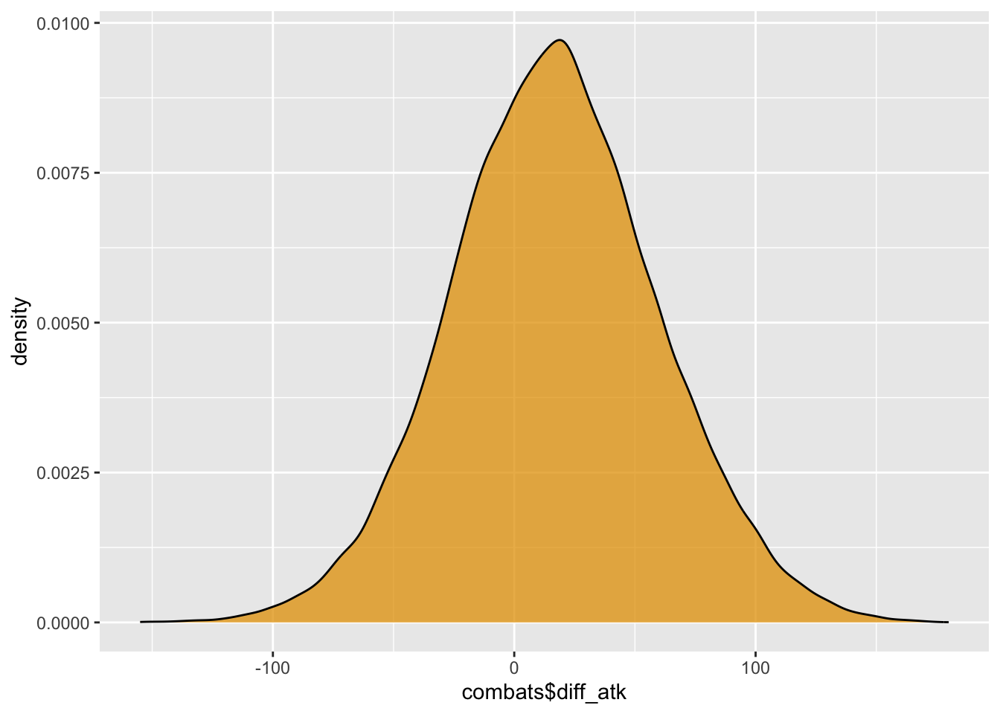
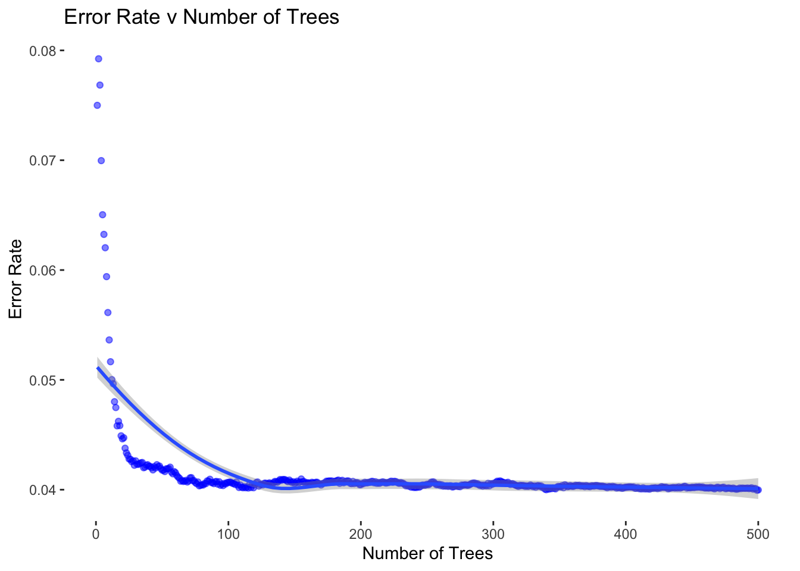
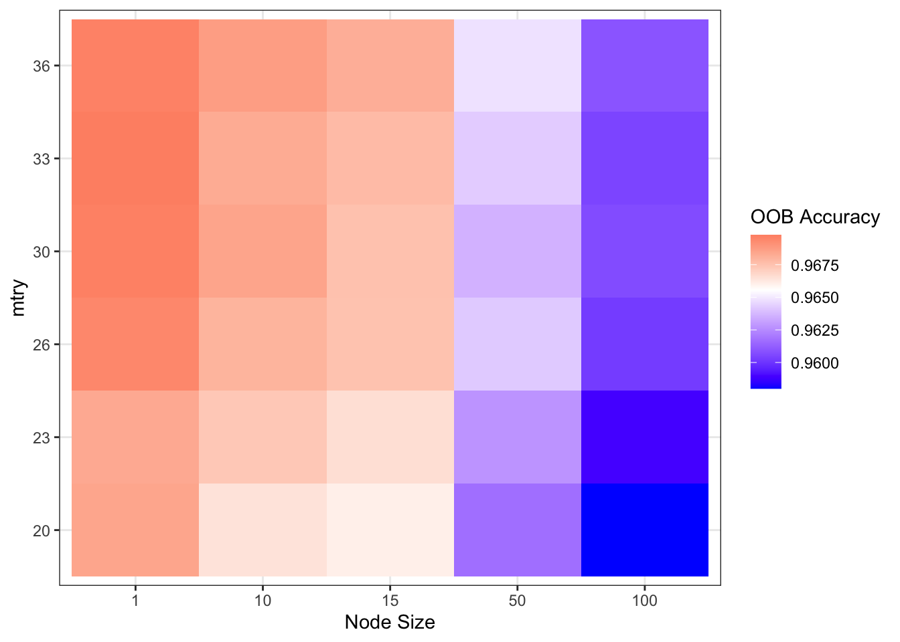
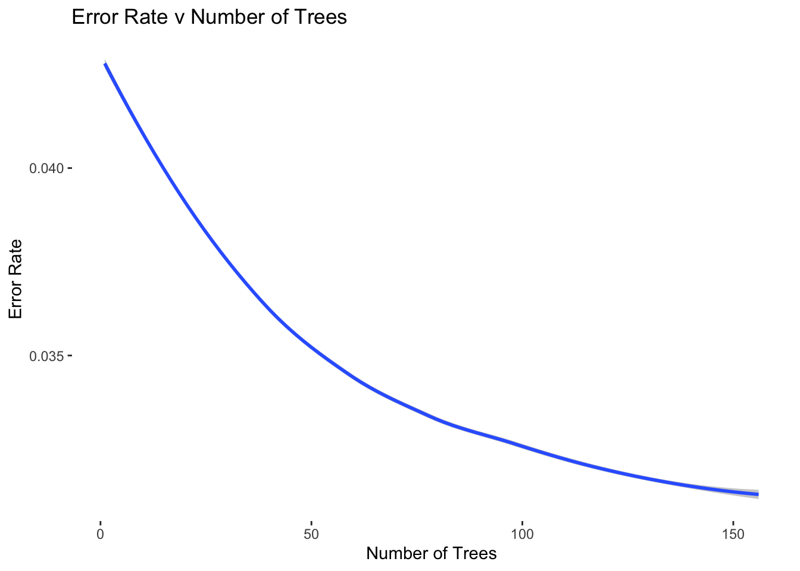
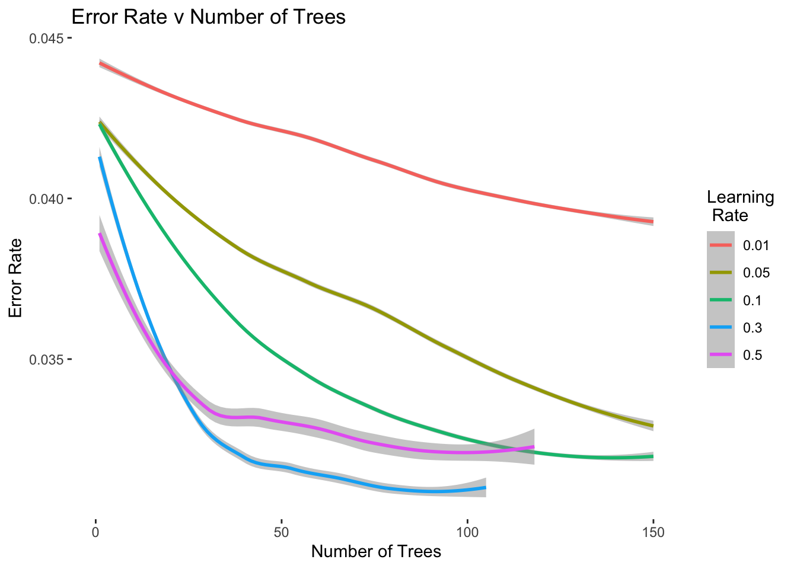

Visualization Work for Pokémon dataset and Pokémon Combat dataset
First we read in the Pokémon dataset and create a visualization to better understand the number of Pokémons in each type, we find out that the types Water, Normal, Grass have the most Pokémons.
library(ggplot2)library(dplyr)
Attaching package: 'dplyr'
The following objects are masked from 'package:stats':
filter, lag
The following objects are masked from 'package:base':
intersect, setdiff, setequal, union
Then we read in the Pokémon combat dataset. From this dataset, we can only see the id of the winner and loser Pokémon, so we try to extract the features info such as correct name, the attack points, speed… of the Winner/ Loser Pokémon from the Pokémon dataset and comfine all those with the combat dataset.
We would like to first calculate the differences between all the numeric competence features between the winner Pokémon and the loser Pokémon.
Second, we create a new variable which includes the info about whether the winner Pokémon has type advantage over the loser Pokémon or not. If yes, then we assign 1, if not, the value remains 0. However, if the winner Pokémon has type disadvantage with the loser Pokémon, we assign -1.
We also incude the variable “if the winner Pokémon is legendary or not”.
It’s about time for us to take a look into the potential winning factor by creating some density plots and bar charts.
From this viz, we find out that winner Pokémon do have more positive attack points difference than the negative, meaing it could be a potential factor to winning the battle. However, generally, the winner Pokémons do not all have relatively strong attack points over the loser Pokémon.
Warning: Use of `combats$diff_atk` is discouraged.
ℹ Use `diff_atk` instead.

This viz is similar to the first one. Special attack points could be a potential factor but there are still lots of negative special attack points differences form the loser Pokémon for the winner Pokémon.
Combine Pokemon dataset and Combat dataset to generate features for First Pokemon and Second Pokemon. Also, create variables of feature difference between first Pokemon and second Pokemon by using the first minus the second and some using the proportion of the two Pokemon’s features. We then put type difference into consideration and created two variables: strong and weak, they represent whether a certain type of Pokemon has advantage/ disadvantage over the other certain type of Pokemon. Finally, we used if the Pokemon is legendary or not as a variable. The dependent variable we used is if_first_wins, which represents if the first Pokemon wins the battle or not, if Yes, we assign 1 and 0 for No.
Generating Train data and Test Data using Stratified Splitting
library(splitstackshape)set.seed(1234) # Set seed# Perform stratified samplingsplit_data <-stratified(combats, # Set datasetgroup ="if_first_win", # Set variables to use for stratificationsize =0.2, # Set size of test setbothSets =TRUE ) # Return both training and test sets# Extract train datatrain_data <- split_data[[2]][,6:70]train_names <- split_data[[2]][,1:5]# Extract test datatest_data <- split_data[[1]][,6:70]test_names <- split_data[[1]][,1:5]
Logistic Regression Model Fitting
library(glmnet)
Loading required package: Matrix
Loaded glmnet 4.1-4
logistic_model <-glm(if_first_win~., # Set formulafamily=binomial(link='logit'), # Set logistic regressiondata= train_data) # Set datasetsum_logistic <-summary(logistic_model) # Sumamrize modelsum_logistic$coefficients[sum_logistic$coefficients[,4] <0.001, c(1, 4)]
logistic_pred <-predict(logistic_model, newdata = test_data, type ="response")
Warning in predict.lm(object, newdata, se.fit, scale = 1, type = if (type == :
prediction from a rank-deficient fit may be misleading
# Create Plot to find the best cut-off value to minimize errorlibrary(ggplot2)plot_dat <-cbind.data.frame(logistic_pred, factor(test_data$if_first_win))names(plot_dat) <-c("probability", "response")g_cutoff <-ggplot(plot_dat, aes(x = probability, fill = response)) +geom_density(alpha =0.3) +theme_bw() +theme(panel.grid.major =element_blank(), # Turn of the background gridpanel.grid.minor =element_blank(),panel.border =element_blank(),panel.background =element_blank()) +labs(x ="Probability", # Set plot labelsfill ="if_first_win",title ="Predicted Probabilities v Win") +scale_fill_manual(values =c("0"="red", "1"="blue"), # Manually set fill valueslabels =c("0"="Lose", "1"="Win"))# Generate Plotg_cutoff
Confusion Matrix and Statistics
pred_class 0 1
0 4735 587
1 545 4133
Accuracy : 0.8868
95% CI : (0.8804, 0.8929)
No Information Rate : 0.528
P-Value [Acc > NIR] : <2e-16
Kappa : 0.7728
Mcnemar's Test P-Value : 0.223
Sensitivity : 0.8756
Specificity : 0.8968
Pos Pred Value : 0.8835
Neg Pred Value : 0.8897
Prevalence : 0.4720
Detection Rate : 0.4133
Detection Prevalence : 0.4678
Balanced Accuracy : 0.8862
'Positive' Class : 1
Random Forest Model Fitting
library(randomForest)
randomForest 4.7-1.1
Type rfNews() to see new features/changes/bug fixes.
Attaching package: 'randomForest'
The following object is masked from 'package:dplyr':
combine
The following object is masked from 'package:ggplot2':
margin
train_data_for_rf <- train_datatrain_data_for_rf$if_first_win <-as.factor(train_data_for_rf$if_first_win)test_data_for_rf <- test_datatest_data_for_rf$if_first_win <-as.factor(test_data_for_rf$if_first_win)rf_mod <-randomForest(if_first_win~., # Set tree formuladata = train_data_for_rf, # Set datasetntree =500) # Set number of trees to userf_mod
Call:
randomForest(formula = if_first_win ~ ., data = train_data_for_rf, ntree = 500)
Type of random forest: classification
Number of trees: 500
No. of variables tried at each split: 8
OOB estimate of error rate: 4%
Confusion matrix:
0 1 class.error
0 20145 974 0.04611961
1 625 18256 0.03310206
oob_error <- rf_mod$err.rate[,1] # Extract oob errorplot_dat <-cbind.data.frame(rep(1:length(oob_error)), oob_error) # Create plot datanames(plot_dat) <-c("trees", "oob_error") # Name plot data# Plot oob errorg_1 <-ggplot(plot_dat, aes(x = trees, y = oob_error)) +# Set x as trees and y as errorgeom_point(alpha =0.5, color ="blue") +# Select geom pointtheme_bw() +# Set themegeom_smooth() +# Add smoothing linetheme(panel.grid.major =element_blank(), # Remove gridpanel.grid.minor =element_blank(), # Remove gridpanel.border =element_blank(), # Remove gridpanel.background =element_blank()) +# Remove grid labs(x ="Number of Trees", title ="Error Rate v Number of Trees",y ="Error Rate") # Set labelsg_1 # Print plot
`geom_smooth()` using method = 'loess' and formula = 'y ~ x'

library(caret)## Try different values to find the best random forestmtry_vals <-c(20, 23, 26, 30, 33, 36)nodesize_vals <-c(1, 10, 15, 50, 100)params <-expand.grid(mtry_vals, nodesize_vals)names(params) <-c("mtry", "nodesize")acc_vec <-rep(NA, nrow(params))sens_vec <-rep(NA, nrow(params))for(i in1:nrow(params)){ rf_mod <-randomForest(if_first_win~., # Set tree formuladata = train_data_for_rf, # Set datasetntree =150,nodesize = params$nodesize[i],mtry = params$mtry[i]) # Set number of trees to use rf_preds <-rf_mod$predicted # Create predictions for bagging model t <-table(rf_preds, train_data_for_rf$if_first_win) # Create table c <-confusionMatrix(t, positive ="1") # Produce confusion matrix acc_vec[i] <- c$overall[1] sens_vec[i] <- c$byClass[1]}res_db <-cbind.data.frame(params, acc_vec, sens_vec)res_db$mtry <-as.factor(res_db$mtry) # Convert tree number to factor for plottingres_db$nodesize <-as.factor(res_db$nodesize) # Convert node size to factor for plottingg_1 <-ggplot(res_db, aes(y = mtry, x = nodesize, fill = acc_vec)) +# set aestheticsgeom_tile() +# Use geom_tile for heatmaptheme_bw() +# Set themescale_fill_gradient2(low ="blue", # Choose low colormid ="white", # Choose mid colorhigh ="red", # Choose high colormidpoint =mean(res_db$acc_vec), # Choose mid pointspace ="Lab", na.value ="grey", # Choose NA valueguide ="colourbar", # Set color baraesthetics ="fill") +# Select aesthetics to applylabs(x ="Node Size", y ="mtry", fill ="OOB Accuracy") # Set labelsg_1 # Generate plot

g_2 <-ggplot(res_db, aes(y = mtry, x = nodesize, fill = sens_vec)) +# set aestheticsgeom_tile() +# Use geom_tile for heatmaptheme_bw() +# Set themescale_fill_gradient2(low ="blue", # Choose low colormid ="white", # Choose mid colorhigh ="red", # Choose high colormidpoint =mean(res_db$sens_vec), # Choose mid pointspace ="Lab", na.value ="grey", # Choose NA valueguide ="colourbar", # Set color baraesthetics ="fill") +# Select aesthetics to applylabs(x ="Node Size", y ="Mtry", fill ="OOB Sensitivity") # Set labelsg_2 # Generate plot
rf_mod <-randomForest(factor(if_first_win)~., # Set tree formuladata = train_data_for_rf, # Set datasetntree =150,nodesize =1,mtry =33)rf_preds <-predict(rf_mod, test_data, type ="prob") # Create predictions for random forest model# Convert predictions to classes, using 0.5rf_pred_class <-rep(0, nrow(rf_preds))rf_pred_class[rf_preds[,2] >=0.5] <-1t <-table(rf_pred_class, test_data$if_first_win) # Create tableconfusionMatrix(t, positive ="1") # Produce confusion matrix
Confusion Matrix and Statistics
rf_pred_class 0 1
0 5120 115
1 160 4605
Accuracy : 0.9725
95% CI : (0.9691, 0.9756)
No Information Rate : 0.528
P-Value [Acc > NIR] : < 2.2e-16
Kappa : 0.9449
Mcnemar's Test P-Value : 0.007971
Sensitivity : 0.9756
Specificity : 0.9697
Pos Pred Value : 0.9664
Neg Pred Value : 0.9780
Prevalence : 0.4720
Detection Rate : 0.4605
Detection Prevalence : 0.4765
Balanced Accuracy : 0.9727
'Positive' Class : 1
XGBoost Model Fitting
library(xgboost)
Attaching package: 'xgboost'
The following object is masked from 'package:dplyr':
slice
dtrain <-xgb.DMatrix(data =as.matrix(train_data[, 2:64]), label = train_data$if_first_win)# Create test matrixdtest <-xgb.DMatrix(data =as.matrix(test_data[, 2:64]), label = test_data$if_first_win)bst_mod_cv <-xgb.cv(data = dtrain, # Set training datanfold =5, # Use 5 fold cross-validationeta =0.1, # Set learning ratenrounds =400, # Set number of roundsearly_stopping_rounds =20, # Set number of rounds to stop at ifverbose =1, # 1 - Prints out fitnthread =1, # Set number of parallel threadsprint_every_n =20, # Prints out result every 20th iterationobjective ="binary:logistic", # Set objectiveeval_metric ="auc",eval_metric ="error") # Set evaluation metric to use
[1] train-auc:0.977583+0.000993 train-error:0.040362+0.001170 test-auc:0.975792+0.001988 test-error:0.044050+0.002732
Multiple eval metrics are present. Will use test_error for early stopping.
Will train until test_error hasn't improved in 20 rounds.
[21] train-auc:0.989935+0.000246 train-error:0.032256+0.000557 test-auc:0.987172+0.001802 test-error:0.038600+0.002497
[41] train-auc:0.994173+0.000133 train-error:0.028387+0.000437 test-auc:0.990694+0.001249 test-error:0.036250+0.002462
[61] train-auc:0.995885+0.000096 train-error:0.024756+0.000470 test-auc:0.991676+0.001119 test-error:0.034250+0.002813
[81] train-auc:0.996854+0.000070 train-error:0.022163+0.000290 test-auc:0.992262+0.001168 test-error:0.033250+0.003130
[101] train-auc:0.997620+0.000085 train-error:0.019844+0.000240 test-auc:0.992705+0.001046 test-error:0.032575+0.003120
[121] train-auc:0.998111+0.000068 train-error:0.018094+0.000240 test-auc:0.992937+0.000979 test-error:0.031975+0.003054
[141] train-auc:0.998510+0.000076 train-error:0.016306+0.000302 test-auc:0.993049+0.000925 test-error:0.031625+0.003065
Stopping. Best iteration:
[136] train-auc:0.998423+0.000067 train-error:0.016681+0.000243 test-auc:0.993065+0.000934 test-error:0.031300+0.002895
pd <-cbind.data.frame(bst_mod_cv$evaluation_log[,c("iter", "test_error_mean")], rep(0.1, nrow(bst_mod_cv$evaluation_log)))names(pd)[3] <-"eta"plot_data <-rbind.data.frame(pd)plot_data$eta <-as.factor(plot_data$eta)g_1 <-ggplot(plot_data, aes(x = iter, y = test_error_mean))+geom_smooth(alpha =0.5) +theme_bw() +# Set themetheme(panel.grid.major =element_blank(), # Remove gridpanel.grid.minor =element_blank(), # Remove gridpanel.border =element_blank(), # Remove gridpanel.background =element_blank()) +# Remove grid labs(x ="Number of Trees", title ="Error Rate v Number of Trees",y ="Error Rate", color ="Learning \n Rate") # Set labelsg_1
`geom_smooth()` using method = 'loess' and formula = 'y ~ x'

bst_mod_1 <-xgb.cv(data = dtrain, # Set training datanfold =5, # Use 5 fold cross-validationeta =0.1, # Set learning ratenrounds =150, # Set number of roundsearly_stopping_rounds =20, # Set number of rounds to stop at ifverbose =1, # 1 - Prints out fitnthread =1, # Set number of parallel threadsprint_every_n =20, # Prints out result every 20th iterationobjective ="binary:logistic", # Set objectiveeval_metric ="auc",eval_metric ="error") # Set evaluation metric to use
[1] train-auc:0.977638+0.000644 train-error:0.040531+0.000869 test-auc:0.976123+0.001838 test-error:0.043925+0.001523
Multiple eval metrics are present. Will use test_error for early stopping.
Will train until test_error hasn't improved in 20 rounds.
[21] train-auc:0.989770+0.000191 train-error:0.032775+0.000253 test-auc:0.987475+0.000810 test-error:0.038025+0.001875
[41] train-auc:0.994227+0.000462 train-error:0.028644+0.000541 test-auc:0.990758+0.000583 test-error:0.035800+0.001171
[61] train-auc:0.996022+0.000203 train-error:0.025000+0.000435 test-auc:0.992003+0.000889 test-error:0.034025+0.001280
[81] train-auc:0.997046+0.000160 train-error:0.022025+0.000174 test-auc:0.992454+0.000942 test-error:0.033075+0.001682
[101] train-auc:0.997691+0.000148 train-error:0.019744+0.000364 test-auc:0.992712+0.000981 test-error:0.032500+0.001755
[121] train-auc:0.998201+0.000114 train-error:0.017713+0.000427 test-auc:0.992914+0.001024 test-error:0.032000+0.001536
[141] train-auc:0.998554+0.000109 train-error:0.016087+0.000557 test-auc:0.993070+0.000983 test-error:0.031925+0.001705
[150] train-auc:0.998688+0.000115 train-error:0.015400+0.000545 test-auc:0.993126+0.000981 test-error:0.031800+0.001738
bst_mod_2 <-xgb.cv(data = dtrain, # Set training datanfold =5, # Use 5 fold cross-validationeta =0.05, # Set learning ratenrounds =150, # Set number of roundsearly_stopping_rounds =20, # Set number of rounds to stop at ifverbose =1, # 1 - Prints out fitnthread =1, # Set number of parallel threadsprint_every_n =20, # Prints out result every 20th iterationobjective ="binary:logistic", # Set objectiveeval_metric ="auc",eval_metric ="error") # Set evaluation metric to use
[1] train-auc:0.977352+0.001028 train-error:0.040750+0.000803 test-auc:0.975521+0.001694 test-error:0.044325+0.002489
Multiple eval metrics are present. Will use test_error for early stopping.
Will train until test_error hasn't improved in 20 rounds.
[21] train-auc:0.986591+0.000693 train-error:0.035363+0.000323 test-auc:0.984653+0.000849 test-error:0.039500+0.001735
[41] train-auc:0.990029+0.000574 train-error:0.032950+0.000734 test-auc:0.987602+0.000577 test-error:0.038100+0.002477
[61] train-auc:0.992603+0.000271 train-error:0.030931+0.000598 test-auc:0.989740+0.000875 test-error:0.037150+0.002529
[81] train-auc:0.994030+0.000251 train-error:0.028825+0.000499 test-auc:0.990765+0.001015 test-error:0.036450+0.002252
[101] train-auc:0.995104+0.000250 train-error:0.026906+0.000649 test-auc:0.991400+0.001095 test-error:0.034725+0.001864
[121] train-auc:0.995863+0.000190 train-error:0.025144+0.000519 test-auc:0.991828+0.000975 test-error:0.033975+0.001633
[141] train-auc:0.996447+0.000139 train-error:0.023656+0.000717 test-auc:0.992163+0.000782 test-error:0.033225+0.001452
[150] train-auc:0.996689+0.000121 train-error:0.023050+0.000817 test-auc:0.992279+0.000753 test-error:0.032975+0.001386
bst_mod_3 <-xgb.cv(data = dtrain, # Set training datanfold =5, # Use 5 fold cross-validationeta =0.3, # Set learning ratenrounds =150, # Set number of roundsearly_stopping_rounds =20, # Set number of rounds to stop at ifverbose =1, # 1 - Prints out fitnthread =1, # Set number of parallel threadsprint_every_n =20, # Prints out result every 20th iterationobjective ="binary:logistic", # Set objectiveeval_metric ="auc",eval_metric ="error") # Set evaluation metric to use
[1] train-auc:0.978080+0.000623 train-error:0.040081+0.000547 test-auc:0.976091+0.001212 test-error:0.043825+0.000977
Multiple eval metrics are present. Will use test_error for early stopping.
Will train until test_error hasn't improved in 20 rounds.
[21] train-auc:0.995853+0.000303 train-error:0.024144+0.000359 test-auc:0.991519+0.001209 test-error:0.033925+0.000510
[41] train-auc:0.998125+0.000089 train-error:0.017394+0.000160 test-auc:0.992479+0.001175 test-error:0.032225+0.000599
[61] train-auc:0.999168+0.000069 train-error:0.012006+0.000380 test-auc:0.992652+0.001179 test-error:0.031550+0.000970
[81] train-auc:0.999624+0.000036 train-error:0.008150+0.000659 test-auc:0.992808+0.001102 test-error:0.030750+0.000597
[101] train-auc:0.999837+0.000010 train-error:0.005300+0.000299 test-auc:0.992743+0.001171 test-error:0.030950+0.000777
Stopping. Best iteration:
[85] train-auc:0.999681+0.000032 train-error:0.007487+0.000519 test-auc:0.992799+0.001129 test-error:0.030625+0.000771
bst_mod_4 <-xgb.cv(data = dtrain, # Set training datanfold =5, # Use 5 fold cross-validationeta =0.01, # Set learning ratenrounds =150, # Set number of roundsearly_stopping_rounds =20, # Set number of rounds to stop at ifverbose =1, # 1 - Prints out fitnthread =1, # Set number of parallel threadsprint_every_n =20, # Prints out result every 20th iterationobjective ="binary:logistic", # Set objectiveeval_metric ="auc",eval_metric ="error") # Set evaluation metric to use
[1] train-auc:0.977358+0.001106 train-error:0.040719+0.001319 test-auc:0.975089+0.001179 test-error:0.044425+0.001493
Multiple eval metrics are present. Will use test_error for early stopping.
Will train until test_error hasn't improved in 20 rounds.
[21] train-auc:0.981727+0.001605 train-error:0.039062+0.001204 test-auc:0.979480+0.002059 test-error:0.043000+0.001589
[41] train-auc:0.983802+0.000990 train-error:0.038269+0.001326 test-auc:0.981577+0.000810 test-error:0.042400+0.001935
[61] train-auc:0.985262+0.000684 train-error:0.037244+0.001514 test-auc:0.983343+0.000710 test-error:0.041950+0.001941
[81] train-auc:0.986002+0.000543 train-error:0.036419+0.001447 test-auc:0.984094+0.001017 test-error:0.040475+0.001985
[101] train-auc:0.986804+0.000505 train-error:0.035906+0.001373 test-auc:0.984862+0.001038 test-error:0.040250+0.001992
[121] train-auc:0.987549+0.000349 train-error:0.035337+0.001162 test-auc:0.985525+0.001108 test-error:0.039775+0.001846
[141] train-auc:0.988103+0.000260 train-error:0.034637+0.001121 test-auc:0.986068+0.001046 test-error:0.039400+0.001913
[150] train-auc:0.988337+0.000305 train-error:0.034400+0.001109 test-auc:0.986245+0.001001 test-error:0.039125+0.002051
bst_mod_5 <-xgb.cv(data = dtrain, # Set training datanfold =5, # Use 5 fold cross-validationeta =0.5, # Set learning ratenrounds =150, # Set number of roundsearly_stopping_rounds =20, # Set number of rounds to stop at ifverbose =1, # 1 - Prints out fitnthread =1, # Set number of parallel threadsprint_every_n =20, # Prints out result every 20th iterationobjective ="binary:logistic", # Set objectiveeval_metric ="auc",eval_metric ="error") # Set evaluation metric to use
[1] train-auc:0.977366+0.001020 train-error:0.039887+0.000318 test-auc:0.975561+0.000898 test-error:0.043925+0.001590
Multiple eval metrics are present. Will use test_error for early stopping.
Will train until test_error hasn't improved in 20 rounds.
[21] train-auc:0.997508+0.000067 train-error:0.019806+0.000518 test-auc:0.992007+0.000744 test-error:0.033925+0.001317
[41] train-auc:0.999348+0.000093 train-error:0.010719+0.000334 test-auc:0.992784+0.000618 test-error:0.033075+0.001764
[61] train-auc:0.999835+0.000025 train-error:0.005194+0.000302 test-auc:0.992925+0.000750 test-error:0.032900+0.001357
[81] train-auc:0.999972+0.000006 train-error:0.001825+0.000170 test-auc:0.992974+0.000689 test-error:0.032150+0.001051
[101] train-auc:0.999997+0.000001 train-error:0.000525+0.000130 test-auc:0.993057+0.000723 test-error:0.032200+0.001245
Stopping. Best iteration:
[98] train-auc:0.999995+0.000002 train-error:0.000619+0.000150 test-auc:0.993032+0.000744 test-error:0.031850+0.001072
pd1 <-cbind.data.frame(bst_mod_1$evaluation_log[,c("iter", "test_error_mean")], rep(0.1, nrow(bst_mod_1$evaluation_log)))names(pd1)[3] <-"eta"# Extract results for model with eta = 0.1pd2 <-cbind.data.frame(bst_mod_2$evaluation_log[,c("iter", "test_error_mean")], rep(0.05, nrow(bst_mod_2$evaluation_log)))names(pd2)[3] <-"eta"# Extract results for model with eta = 0.05pd3 <-cbind.data.frame(bst_mod_3$evaluation_log[,c("iter", "test_error_mean")], rep(0.3, nrow(bst_mod_3$evaluation_log)))names(pd3)[3] <-"eta"# Extract results for model with eta = 0.01pd4 <-cbind.data.frame(bst_mod_4$evaluation_log[,c("iter", "test_error_mean")], rep(0.01, nrow(bst_mod_4$evaluation_log)))names(pd4)[3] <-"eta"# Extract results for model with eta = 0.005pd5 <-cbind.data.frame(bst_mod_5$evaluation_log[,c("iter", "test_error_mean")], rep(0.5, nrow(bst_mod_5$evaluation_log)))names(pd5)[3] <-"eta"# Join datasetsplot_data <-rbind.data.frame(pd1, pd2, pd3, pd4, pd5)# Converty ETA to factorplot_data$eta <-as.factor(plot_data$eta)g_eta <-ggplot(plot_data, aes(x = iter, y = test_error_mean, color = eta))+geom_smooth(alpha =0.5) +theme_bw() +# Set themetheme(panel.grid.major =element_blank(), # Remove gridpanel.grid.minor =element_blank(), # Remove gridpanel.border =element_blank(), # Remove gridpanel.background =element_blank()) +# Remove grid labs(x ="Number of Trees", title ="Error Rate v Number of Trees",y ="Error Rate", color ="Learning \n Rate") # Set labelsg_eta
`geom_smooth()` using method = 'loess' and formula = 'y ~ x'

best_bst_mod <-xgboost(data = dtrain, # Set training dataeta =0.3, nrounds =130, # Set number of roundsverbose =1, # 1 - Prints out fitprint_every_n =20, # Prints out result every 20th iterationobjective ="binary:logistic", # Set objectiveeval_metric ="auc",eval_metric ="error") # Set evaluation metric to use
boost_preds_2 <-predict(best_bst_mod, dtest) # Create predictions for xgboost model# Convert predictions to classes, using optimal cut-offboost_pred_class <-rep(0, length(boost_preds_2))boost_pred_class[boost_preds_2 >=0.5] <-1boost_pred_class[boost_preds_2 <0.5] <-0t <-table(boost_pred_class, test_data$if_first_win) # Create tableconfusionMatrix(t, positive ="1") # Produce confusion matrix
Confusion Matrix and Statistics
boost_pred_class 0 1
0 5122 120
1 158 4600
Accuracy : 0.9722
95% CI : (0.9688, 0.9753)
No Information Rate : 0.528
P-Value [Acc > NIR] : < 2e-16
Kappa : 0.9442
Mcnemar's Test P-Value : 0.02648
Sensitivity : 0.9746
Specificity : 0.9701
Pos Pred Value : 0.9668
Neg Pred Value : 0.9771
Prevalence : 0.4720
Detection Rate : 0.4600
Detection Prevalence : 0.4758
Balanced Accuracy : 0.9723
'Positive' Class : 1
Bagging Model Fitting
bag_mod <-randomForest(if_first_win~., # Set tree formuladata = train_data_for_rf,mtry =63,ntree =150) # Set number of trees to use) # Set number of trees to usebag_mod # View model
Call:
randomForest(formula = if_first_win ~ ., data = train_data_for_rf, mtry = 63, ntree = 150)
Type of random forest: classification
Number of trees: 150
No. of variables tried at each split: 63
OOB estimate of error rate: 3.05%
Confusion matrix:
0 1 class.error
0 20415 704 0.03333491
1 516 18365 0.02732906
bag_preds <-predict(bag_mod, test_data, type ="prob") # Create predictions for xgboost modelboost_pred_class <-rep(0, length(bag_preds[,2]))boost_pred_class[bag_preds[,2] >=0.5] <-1boost_pred_class[bag_preds[,2] <0.5] <-0t <-table(boost_pred_class, test_data$if_first_win) # Create tableconfusionMatrix(t, positive ="1") # Produce confusion matrix
Confusion Matrix and Statistics
boost_pred_class 0 1
0 5126 119
1 154 4601
Accuracy : 0.9727
95% CI : (0.9693, 0.9758)
No Information Rate : 0.528
P-Value [Acc > NIR] : < 2e-16
Kappa : 0.9452
Mcnemar's Test P-Value : 0.03961
Sensitivity : 0.9748
Specificity : 0.9708
Pos Pred Value : 0.9676
Neg Pred Value : 0.9773
Prevalence : 0.4720
Detection Rate : 0.4601
Detection Prevalence : 0.4755
Balanced Accuracy : 0.9728
'Positive' Class : 1
ROC/ AUC Comparison between Logistic Regression, Random Forest, XGBoost and Bagging
library(pROC)
Type 'citation("pROC")' for a citation.
Attaching package: 'pROC'
The following objects are masked from 'package:stats':
cov, smooth, var